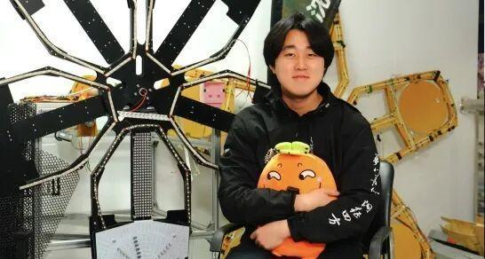
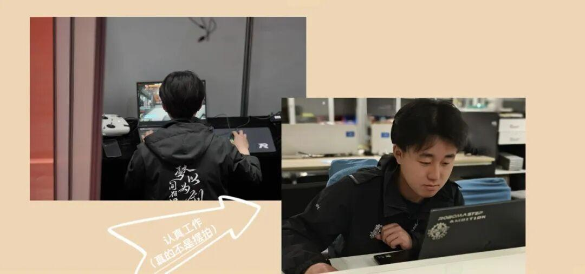
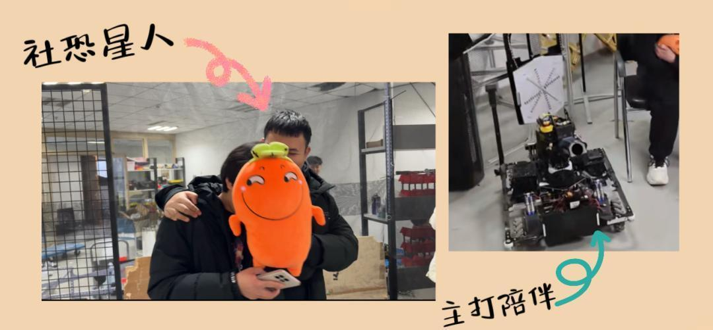

使用小程序
人物专访
｜徐云
人物简介
徐云：视觉组组长
2004.10.08
天秤座

采访内容
问题1：视觉组具体的工作内容？
答：视觉组大部分时间是做计算机视觉并不是传统的美学设计。
问题2：个人平时的工作内容？
答：大二时主要负责整辆车的自瞄系统，大三主要负责导航和雷达站这两个工作。
问题3：工作中印象最深刻的事？
答：印象深刻的事情有很多，拿大二举例子，由于一些不可抗因素，被迫拧了一年螺丝，总之去年的大部分时间我都是陪着电控组，给我们英雄工机械做工作，和成员一起装车、调车，过程还是很枯燥的。
问题4：说说工作中get到的新技能
答：我进入视觉组，了解了很多计算机编程的知识，我觉得这三年来到电协，接触到了很多高精尖的技术，我认为这对我以后就业、找工作都会有很大的帮助。
问题5：对电协中学弟学妹们的叮嘱
答：好好上课，把考试放在第一位，该学习的时候就学习，该备赛时再专心备赛，比赛会很耗时间和精力，一定要明确目标，再投入比赛之中。
总结
经过采访前的准备工作，采访过程中的状态，以及采访后的沟通，可以看出，徐云学长是一个耐心、内敛、具有语言组织能力的人。从他对工作的认真负责和对比赛的积极准备，都可以看出他对于电协的喜爱。

采访前，会让人误以为他是社恐i人，但采访过程中，他面对各种的专业知识却是侃侃而谈，从眼神中足以看出他对战队、对电协的热爱。

最后，祝愿徐云学长可以实现自己对学业的追求，也在未来的比赛中，荣获佳绩！
感谢徐云学长的积极配合！
推文 | 张潇文
图片 | Ambition战队运营组
审核|青唐三月